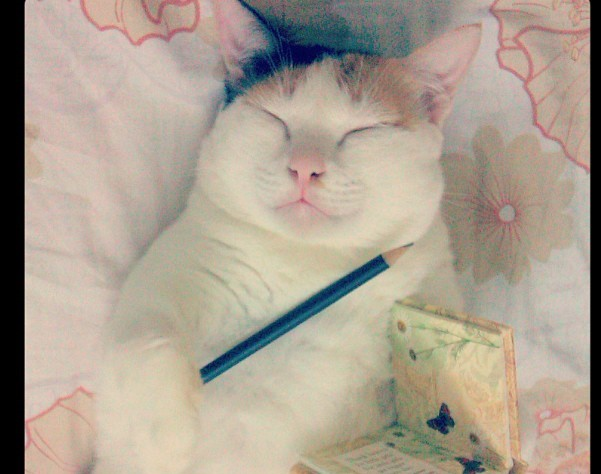
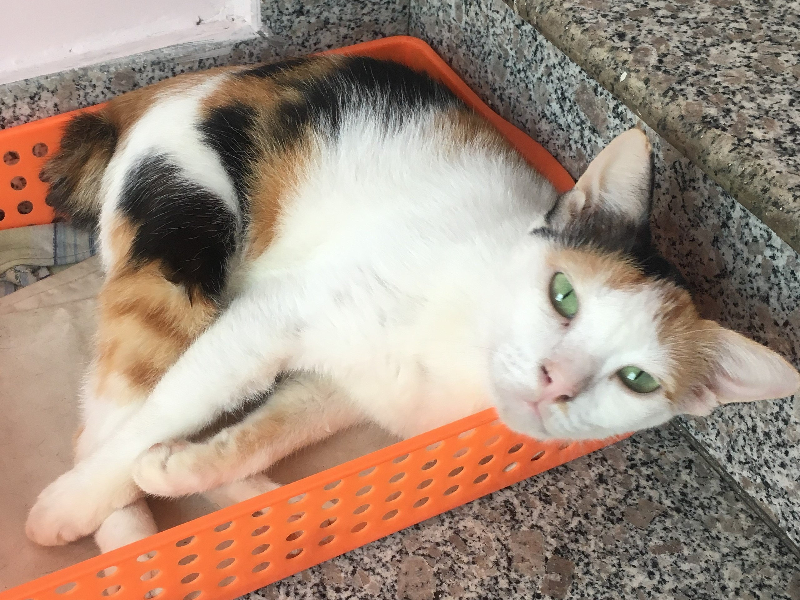
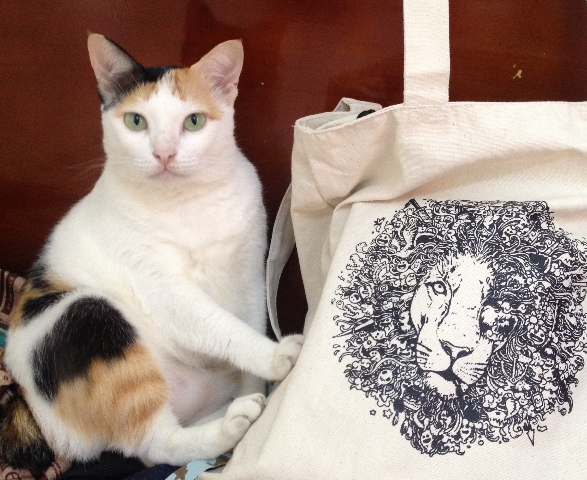
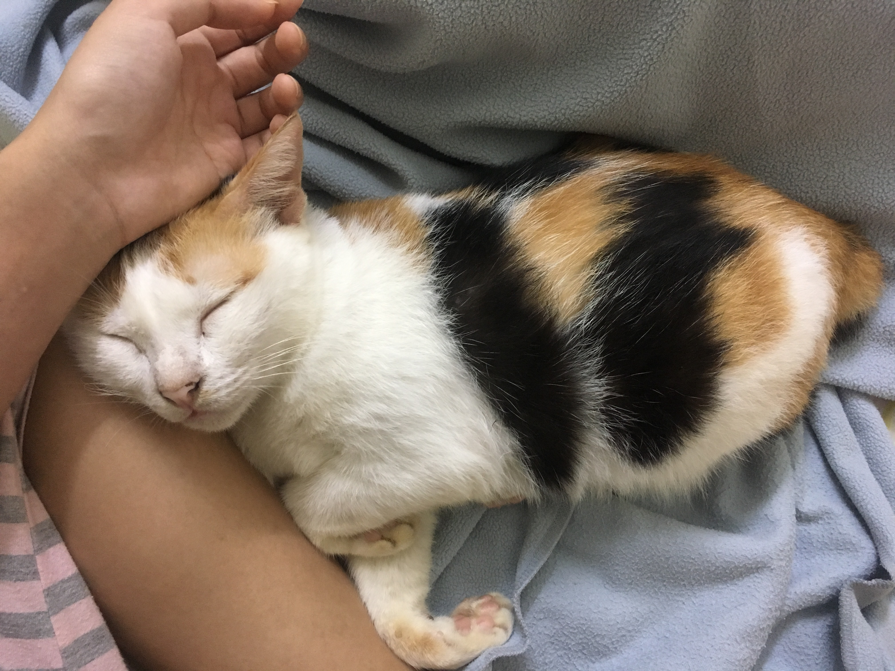

Mini
Sex: Female
D.O.B: July 2007
Mini is a 13-year-old tricolor cat. She's my absolute favorite.
She came to my life unexpectedly, when our family was having dinner at a restaurant near our house.
My dad heard a tiny "meow" when we left the place, but we couldn't find anything. After we got home,
it started to rain. I couldn't sleep and ask my mom if we should give another try. I'm so thankful with that decision.
We went back and saw a tiny little kitten crawling to the middle of the street under the pouring rain. As if she tried to come to us!

